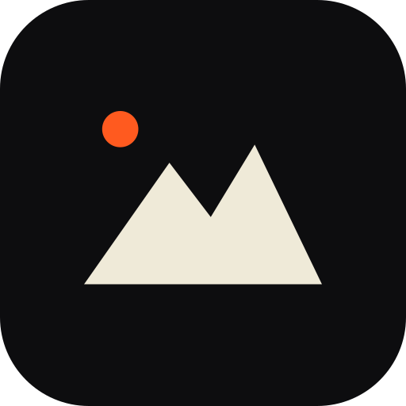

Illustrator, Photoshop and Figma to After Effects, as native, editable layers. The identity comes from the hamkobarezz.com system: a dark ground, off-white type, and orange used only where it matters.
Two peaks and a sun. The higher peak on the right reads as a climb from left to right, from your design app up into After Effects. The orange sun is the one warm point in the mark.
Off-white peaks with an orange sun. Never add a second accent colour.
Hard straight edges keep it bold. The single circle softens it and gives the eye a starting point.
Leave space equal to the sun's diameter on every side of the mark. More is better.
Use the standard mark at 24px and up. Below that, use ascend-icon-small.svg, which has a larger sun and a simpler ridge.
Ink is the default background. Use paper for print and light UIs, and the orange ground only for one-off moments like a launch post.
For the After Effects panel, the Illustrator, Photoshop and Figma plugin listings, and store thumbnails. From 32px down, the small version uses a larger sun so it doesn't disappear.

The same palette as hamkobarezz.com. Use it mostly dark, and keep orange to roughly one thing per screen: the main button, the sun, or a highlighted word.
Ratio 70 ink / 15 tile / 10 paper / 5 orange
The website's type system. The wordmark is Inter Tight Bold, lowercase, with tight tracking. Use mono uppercase for small labels and technical details.
The After Effects panel and a store listing. One orange button per view, with everything else in neutral greys.
Push artwork from Illustrator, Photoshop or Figma and pull it into After Effects as live shape, text and image layers. No exports and no rebuilding.
Short, confident, a little dry. Talk about the result (native, editable layers), not the technology.
Design anywhere. Rise in After Effects.
Native layers, one click.
Lift your layers.
The mark only works when it stays simple.